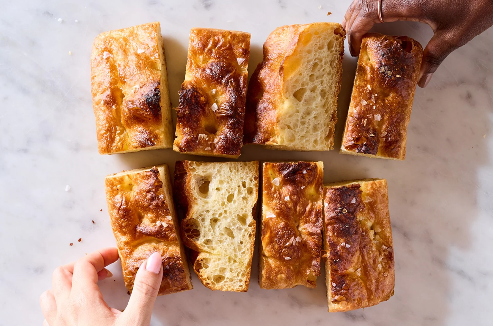

Big and Bubbly Focaccia

With its bubbly, bronzed top, crisp edges, and tender, airy interior. It’s lofty but light, strikingly tall, and the perfect size for the dinner table.
3 cups (360g)all-purpose flour1½ tsp (9g)salt1 tsp (5g)sugar1 tsp (3g)instant yeast1¼ cups (284g)water, warm (90-110°F)1½ tbsp (19.5g)olive oil
To make the dough: Weigh your flour; or measure it by gently spooning it into a cup, then sweeping off any excess. In a large bowl, whisk together the flour, salt, sugar, and yeast.
Add the water and olive oil and stir — with a spatula, bowl scraper, dough whisk, or your hands — until the mixture is thoroughly combined and homogeneous; there should be no dry patches or lumps. Cover the bowl and set it aside for 15 minutes.
Perform the first bowl fold: Use a wet hand to grab a section of dough from one side of the bowl, then lift it up and press it into the center. Repeat this motion, grabbing a new section of dough each time, until you’ve made a full circle around the bowl, about 8 to 12 times. Once you’ve circled the bowl, flip the dough over in the bowl so that the smooth side is up; the first bowl fold is now complete. Cover the bowl and let the dough rest for 15 minutes.
Repeat the bowl fold for a second time. (Remember to use a wet hand to prevent the dough from sticking!) At this point, the dough should feel smoother and tighter. Cover the bowl and let the dough rest for 15 minutes.
Repeat the bowl fold for a third time. Cover the bowl and let the dough rest for 15 minutes.
Repeat the bowl fold for a fourth and final time; the dough should feel relatively strong.
Cover the bowl and let the dough rise at a warm room temperature (70°F to 75°F) for 1 hour. After 1 hour, the dough should have nearly doubled in size and will be very puffy; it may even have a few bubbles on the surface.
To prepare the pan: Once the dough has risen, spray the bottom and sides of a 9” square Focaccia Pan with nonstick spray. You can also use a 10” cast-iron skillet. Then add 1 tablespoon (13g) of the olive oil and tilt the pan to spread the oil evenly across the bottom.
Use a bowl scraper or flexible spatula to gently transfer the risen dough to the center of the pan. Using your hand as paddles (and a bowl scraper for assistance, if you need it) swiftly but gently flip the dough over so that it’s coated in oil; try to handle the dough minimally to keep it from deflating.
Cover the pan and let the dough rise at a warm room temperature for 1 to 1½ hours, until it’s marshmallowy and jiggly; the dough should nearly fill the corners of the pan and be very close to the top edge.
Toward the end of the rise, preheat the oven to 475°F with racks in the upper and lower thirds.
2 tbsp (26g)olive oil, divided- flaky sea salt
- rosemary (optional)
Once the dough has risen, lightly coat your fingers in oil. Starting at one edge, press your fingertips into the dough until they reach the bottom of the pan, creating dimples. Repeat this process, working your way from one edge to the other, spacing the dimples about 1½” apart. The goal is to thoroughly dimple the dough without deflating it — aim for decisive yet gentle motions. If there are any large untouched areas of the dough, add additional dimples using one finger.
To top the dough: Drizzle the remaining 1 tablespoon (13g) olive oil all over the surface of the dough; it’s OK if it pools in some dimples. Sprinkle evenly with flaky salt (use ½ teaspoon Maldon).
Bake the focaccia on the lower rack for 15 to 18 minutes, until brown in the highest spots and golden in the crevices. If necessary, move the pan to the top rack and broil briefly for the final 1 to 2 minutes, watching carefully, to achieve the desired color.
Remove the focaccia from the oven. Slide the focaccia out of the pan and transfer it to a wire rack or cutting board. Turn off the oven and slide the focaccia back into the oven, directly on the lower rack, for 5 to 7 minutes, until the sides are golden brown and crisp. Remove the focaccia from the oven once again and transfer it to a wire rack to cool completely.
Storage information: Focaccia is best enjoyed the day it’s made. If storing leftovers, wrap the focaccia loosely in foil, keep it at room temperature, and reheat before serving.